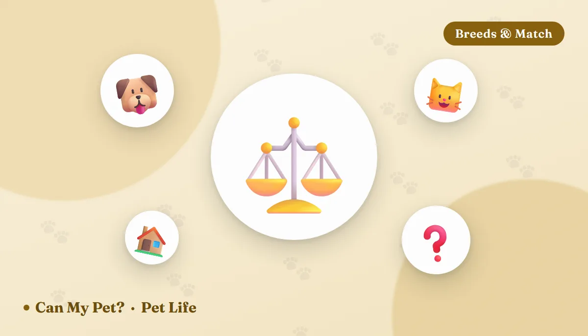

Dog or Cat: Which Is Right for You? An Honest Comparison

Most people asking this question already have a favorite. What they're really asking is whether the favorite fits — the flat, the hours, the budget, the person they'll be in eight years. That's the useful question, and it has an answer. Below is the comparison shelter staff and veterinary teams actually make: not which animal is nicer, but which one matches the life you're going to hand it. Nearly every unhappy adoption we hear about was a mismatch, not a bad pet.
The comparison, side by side
Averages hide a lot. A Border Collie and a Bulldog barely share a species when it comes to daily needs, and a Bengal will out-demand plenty of dogs. Still, this is the honest baseline for a typical adult animal in a typical home:
| Dog | Cat | |
|---|---|---|
| Daily hands-on time | 1.5–3 hours: walks, training, play, feeding, cleaning up after | 30–60 minutes: two play sessions, meals, litter box |
| Alone-time tolerance | ~4–6 hours for a settled adult; far less for puppies | A normal workday is fine; 24 hours-plus needs a sitter |
| Typical annual cost | Higher — food, grooming, boarding, walkers and medication doses all scale with body weight | Lower across the board; boarding and sitting cost noticeably less |
| Space needed | Depends far more on breed energy than square footage — but needs outdoor access | Adapts to small homes using vertical space: shelves, trees, windowsills |
| Noise | Barking is the number one neighbor complaint and a real tenancy risk | Almost always negligible; night zoomies at worst |
| Training | Essential, ongoing, and a large part of the relationship | Possible and worthwhile, but far less required |
| Travel | Complicated — boarding, sitters, or a dog-friendly itinerary | A neighbor or sitter dropping in usually covers short trips |
| Typical lifespan | 10–13 years; large breeds shorter, small breeds longer | 12–18 years, often longer indoors |
| Mess | Mud, shedding, chewing in the first year | Litter tracking, hairballs, furniture scratching if no post |
If you want real numbers for your own postcode and pet size rather than national averages, run both through the pet cost calculator before you fall in love with anyone at a shelter.
The five questions that actually decide it
1️⃣ How many hours is your home empty?
This is the single biggest predictor. A dog left alone for nine hours a day, five days a week, is not a dog with a behavior problem — it's a dog with an unmet need that shows up as barking, chewing or house-soiling. If you can't fund a walker or a daycare day, or work from home part of the week, a cat is not the compromise choice. It's the correct one.
2️⃣ How predictable is your schedule?
Dogs need their day to be roughly the same shape. Shift work, on-call rotas, frequent last-minute travel and long unpredictable days are much kinder to a cat, especially a pair who keep each other company.
3️⃣ What can you absorb financially?
Not the monthly cost — the surprise. A torn cruciate ligament, a blocked bladder, a swallowed sock. Either species can hand you a four-figure emergency bill, and the right answer is an emergency fund or insurance from day one rather than a cheaper species.
4️⃣ Who else lives there?
Small children, an existing pet, a landlord, a housemate with allergies. Every one of these narrows the field, and all of them are easier to solve before adoption than after. If you already have one species and are adding the other, read do dogs and cats get along? and how to introduce a new pet first — the introduction protocol matters more than the personalities.
5️⃣ What do you actually want from the relationship?
Be honest here. If you want a walking companion, a reason to be outside every morning, a training project, a pet that will meet you at the door with its whole body — that's a dog, and a cat will disappoint you. If you want warm, quiet company that fits around your life without steering it, that's a cat, and a dog will exhaust you.
Where dogs genuinely win
- Structure and routine. A dog puts a shape on the day — morning walk, evening walk, mealtimes. For people who benefit from that scaffolding, it's the whole point.
- Getting you outside. Dog owners walk measurably more than non-owners. It's one of the better-documented health effects of pet ownership, and it's not small.
- Trainability and shared activities. Scentwork, agility, hiking, trick training, therapy work. Dogs will happily join a project with you.
- Social contact. Dog walking is a reliable route to conversation with neighbors, which matters a great deal to people living alone.
- Legibility. Dogs are easier for a beginner to read. Their body language is broader and more obvious than a cat's, so mistakes get caught sooner.
Where cats genuinely win
- Compatibility with a normal job. A cat can be left for a working day without distress. That single fact makes cats the realistic pet for a very large number of households.
- Small spaces. Cats treat a flat as a three-dimensional territory. Add height — a tall tree, a couple of shelves, a window perch — and a one-bedroom becomes generous. See best cat breeds for apartments.
- Cost. Less food, less equipment, cheaper boarding, no walkers or daycare.
- Quiet. Almost never a neighbor problem, which matters in shared buildings.
- Longevity. Indoor cats routinely reach their late teens — several more years of company than most dogs give you.
- Self-cleaning. Cats groom themselves and use a box indoors, with no 6am rain walk attached.
Honest warnings for each side
What about allergies?
Cat allergy is both more common and typically more severe than dog allergy. The main culprit is Fel d 1, a protein in feline saliva and skin that spreads onto the coat during grooming and then onto everything else — which is why no cat breed is genuinely hypoallergenic, whatever a breeder tells you. Dog allergens behave similarly, though some low-shedding coats put less dander into the air; we go through the evidence in hypoallergenic dog breeds.
If anyone in the household has known allergies, see an allergist before adopting, and spend real time — hours, repeated — with the specific animal you're considering. Returning a pet because of a reaction that was foreseeable is the outcome everyone wants to avoid.
Still torn? Two things that help
First, foster before you adopt. Most shelters are desperate for foster homes, and a fortnight with a real animal in your real flat answers the question better than any article. Second, notice which set of daily chores you were nodding along to. People who mentally skimmed the walking paragraph and lingered on the litter box one have already chosen.
And if the answer turns out to be "both, eventually" — that's very achievable. It just needs to happen in the right order, with a slow, scent-first introduction rather than a hopeful meeting in the hallway.
Frequently asked questions
Is a cat really easier than a dog?
On logistics, yes — no walks, indoor toileting, and a working day alone is fine. On attentiveness, no. Cats hide illness better and need enrichment that owners often skip because nothing forces the issue the way a walk does.
Which is cheaper over a lifetime?
Cats, comfortably, mostly because food, medication doses, grooming and boarding all scale with body weight. A single emergency can wipe out the difference for either, so plan for that rather than choosing on price.
Can I have a dog if I work full-time?
Yes, with a midday walker, daycare, a neighbor or hybrid working. Without one of those, a nine-hour daily absence is where the behavior problems start.
Are cats better for small apartments?
Generally yes, because they use vertical territory rather than floor space. Many dogs live well in apartments too — the constraints are barking, ground-floor access and whether you can meet the breed's exercise needs outside.
Which is better with young children?
Neither by default. A calm, well-socialized adult dog of a tolerant breed and a confident, handling-tolerant cat both do well; a nervous individual of either species does not. Supervision and teaching children to read the animal matter more than the species.
What if I want both?
Very doable, especially if either animal has lived with the other species before. Introduce slowly through scent and a closed door, give the cat high escape routes, and never let a first meeting happen loose.
Sources: American Kennel Club guidance on breed selection, exercise needs and puppy socialization; ASPCA and American Association of Feline Practitioners guidance on feline environmental needs, enrichment and multi-cat households; American Animal Hospital Association guidance on preventive care and life-stage costs; and published research on human–animal attachment, dog-walking and owner physical activity, and Fel d 1 as the principal feline allergen. For information only — not veterinary advice. Discuss allergies with a physician and any specific pet's health or temperament with your veterinarian or the shelter's behavior team.